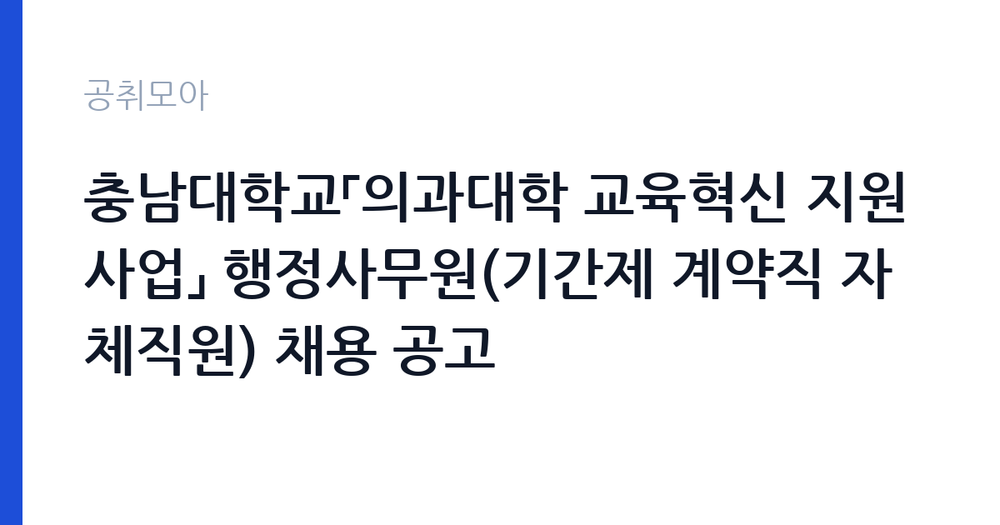

[국가기관] 충남대학교「의과대학 교육혁신 지원사업」 행정사무원(기간제 계약직 자체직원) 채용 공고
충남대학교 · 대전 · 마감 2026-10-16 (D-5) · 출처 나라일터

한눈에 보는 모집 조건
| 기관 | 충남대학교 |
|---|---|
| 공고명 | 충남대학교「의과대학 교육혁신 지원사업」 행정사무원(기간제 계약직 자체직원) 채용 공고 |
| 고용형태 | 기간제 |
| 근무지 | 대전 |
| 게시일 | 2026-10-12 |
| 마감일 | 2026-10-16 (D-5) |
지원자격, 이렇게 읽으세요
- 행정사무원 1명
- 접수 ~2026-10-16 마감
- 세부 조건은 원문 공고문 확인
선발직급은 행정사무원 1명이며 고용형태는 기간제입니다. 대학 행정이나 정부재정지원사업 운영 경험, 문서 작성과 예산집행 실무 능력이 있으면 서류 심사에서 강점이 됩니다. 학사학위 이상 소지자를 우대하는 것이 충남대 유사사업 공고의 관례였으나, 이번 공고의 정확한 자격요건은 원문 공고문에서 확인하셔야 합니다. 이메일 접수 주소는 med8118@cnu.ac.kr이며 문의처는 042-580-8118입니다.
이 공고의 포인트
이 공고의 매력은 의과대학이라는 특수 조직에서 국고 지원사업 행정을 경험한다는 점입니다. 교육혁신 지원사업은 예산집행과 성과관리, 보고서 작성까지 사업 운영의 전 과정을 접할 수 있어 대학 행정직이나 공공기관 행정직을 준비하는 분에게 실무 포트폴리오가 됩니다. 채용 인원이 1명이라 서류에서 직무 연관성을 분명히 보여주는 것이 중요하고, 접수 기간이 5일로 짧아 빠른 결단이 필요합니다.
전형은 어떻게 진행되나
이메일 접수로 서류를 제출하면 서류심사와 면접심사를 거쳐 최종 합격자를 선발하는 것이 대학 기간제 채용의 일반적인 흐름입니다. 접수 기간이 2026년 10월 12일부터 10월 16일 오후 6시까지로 짧으니, 이력서와 자기소개서, 경력증명서를 미리 갖춰 두셔야 합니다. 면접 일정과 합격자 발표 방식은 원문 공고문에서 확인하십시오.
원문에서 확인한 전형 방식
○ 선발직급 : 행정사무원 1명 ○ 고용형태 : 기간제 ○ 접수기간 : 2026. 10. 12.(월) ~ 10. 16.(금) 18:00까지 ○ 응시방법 : 이메일 접수(med8118@cnu.ac.kr) ○ 문의처 : 충남대학교 의과대학 채용업무 담당자 ☎ 042-580-8118
이런 분께 추천해요
- 대학 행정이나 국고사업 운영 경험을 쌓고 싶은 분입니다. 의과대학 행정 경력은 이후 국립대와 공공기관 행정직 지원에서 강점이 됩니다.
- 문서 작성과 엑셀, 예산집행 실무에 자신 있는 분입니다. 지원사업 행정의 핵심 역량이 그대로 통하는 자리입니다.
- 대전에서 근무 가능한 분으로, 단기 계약이어도 실무 경험을 확실하게 남기고 싶은 분입니다.
지원 전 체크리스트
- 접수 마감시각인 10월 16일 오후 6시를 넘기지 않도록 제출 일정을 정하셨습니까.
- 이력서와 자기소개서, 최종학력증명서와 경력증명서를 모두 준비하셨습니까.
- 이메일 접수 주소 med8118@cnu.ac.kr와 제출 서류 양식을 원문에서 확인하셨습니까.
- 계약기간과 근무시간, 보수 조건을 원문 공고문에서 대조하셨습니까.
모집 일정과 제출 타이밍
접수 기간은 2026년 10월 12일부터 10월 16일 오후 6시까지로 단 5일입니다. 주말이 포함된 일정이라 증명서 발급이 필요하면 12일 당일에 신청하셔야 합니다. 이메일 접수는 마감시각 도착분까지만 인정되는 것이 일반적이므로, 최소 마감 하루 전에는 발송을 마치시기를 권합니다.
직무 이해하기: 국가기관
교육혁신 지원사업 행정사무원은 사업 예산집행과 정산, 회의 운영과 문서 관리, 성과자료 정리와 보고서 작성을 맡습니다. 의과대학 행정실 소속으로 교수진과 사업 담당자를 지원하는 협업이 많으며, 정부재정지원사업 집행기준에 맞춘 정확한 회계 처리가 핵심 업무입니다. 대학 행정 시스템과 국고사업 운영 방식을 함께 익힐 수 있는 자리입니다.
자기소개서 작성 팁
자기소개서는 대학 행정과 지원사업 운영 경험을 중심으로 쓰십시오. 예산집행이나 정산, 사업 보고서 작성 경험이 있다면 금액과 기간을 곁들여 구체적으로 서술하시고, 의학교육이라는 특수 분야에 대한 이해와 관심을 한 문단으로 보여주십시오. 이메일 접수라 파일명과 양식을 공고문 지침대로 맞추는 세심함도 평가 요소입니다.
면접 준비 포인트
면접에서는 지원사업 행정 실무 지식과 문서 처리 능력, 교수진과 협업하는 의사소통 방식을 묻습니다. 정부재정지원사업 집행 절차의 큰 흐름을 미리 공부해 두시고, 촉박한 마감 속에서도 정확한 일 처리를 한 경험을 사례로 준비하십시오.
급여·근무조건 읽는 법
충남대학교 정부재정지원사업 집행기준에 따르면 행정사무원 연봉은 학사학위 이상 기준 26,000천원 수준으로 안내된 바 있으며, 여기에는 명절수당이 포함되고 퇴직금은 별도 지급됩니다. 다만 사업별로 예산과 조건이 다를 수 있으므로 이번 공고의 정확한 초임연봉과 수당 구성은 원문 공고문의 보수 조건에서 확인하셔야 합니다.
자주 묻는 질문
- 계약기간은 어떻게 됩니까?
정부재정지원사업 자체직원은 사업 기간에 맞춰 계약하며, 사업 평가와 예산 여건에 따라 재계약이 가능합니다. 정확한 계약기간은 해당 공고문의 근로조건에서 확인하십시오. - 같은 대학의 다른 행정사무원 공고와 중복 지원이 가능합니까?
별개의 채용 건이므로 각각 지원이 가능한 것이 일반적이나, 접수 방식과 자격요건이 같아도 서류는 건별로 제출해야 합니다. 중복 합격 시 선택 기준을 미리 정해 두십시오. - 재직자 평판은 어떻습니까?
대학 행정 자체직원은 업무 강도에 비해 고용 안정성이 낮다는 평가가 있으나, 국립대 행정 경력 자체는 이후 이직에서 자산이 됩니다. 계약조건을 꼼꼼히 따져보고 지원하시기를 권합니다.
함께 보면 좋은 공고
[국가기관] 산림항공본부 항공직(항공주사, 항공주사보) 경력경쟁채용시험 공고 — 마감 2026-10-23[국가기관] 경기도남부경찰청 5기동대 환경미화(무기계약직)채용 공고 — 마감 2026-10-22[국가기관] 충남대학교 의과대학 「의학교육 활성화 지원사업」 행정사무원(기간제 계약직 자체직원) 채용 공고 — 마감 2026-10-16출처: 나라일터 공개정보를 바탕으로 공취모아가 정리한 안내글입니다. 모집 조건·일정은 변경될 수 있으니 지원 전 반드시 원문 공고문을 확인하세요. 본 글은 정보 제공용이며 합격을 보장하지 않습니다.